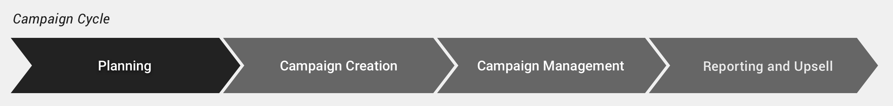
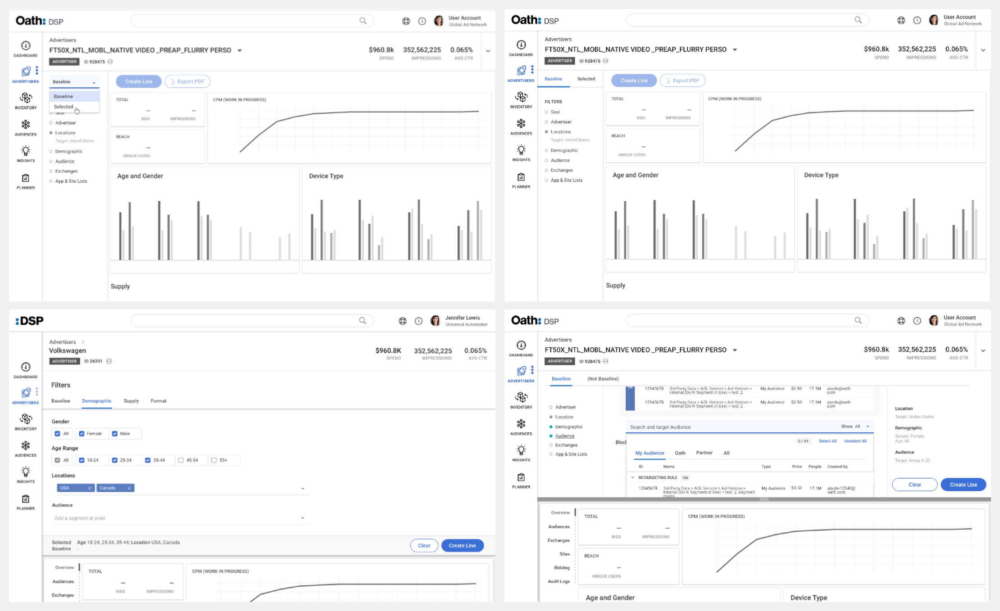
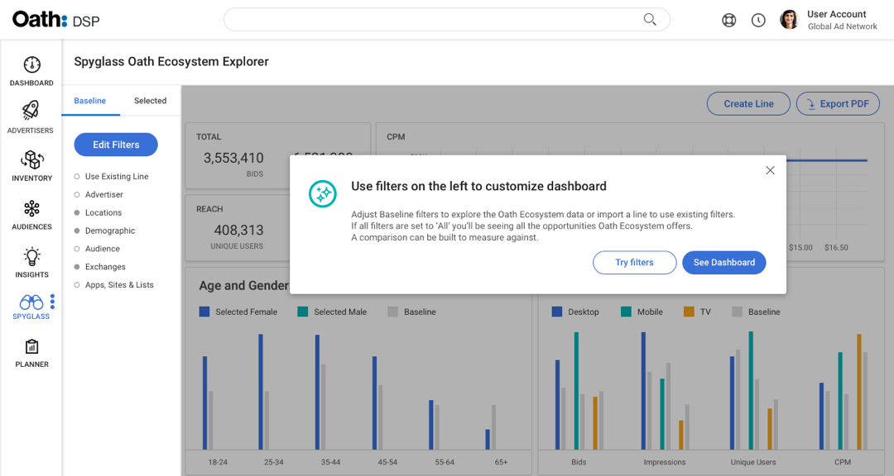
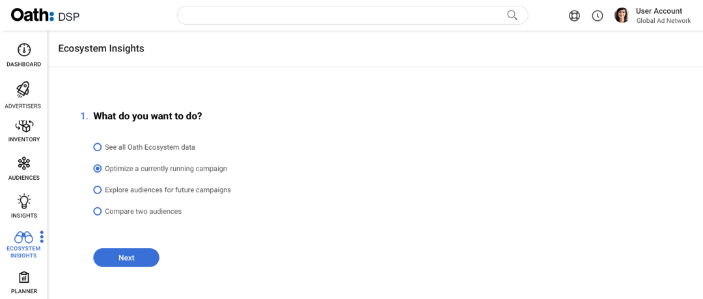
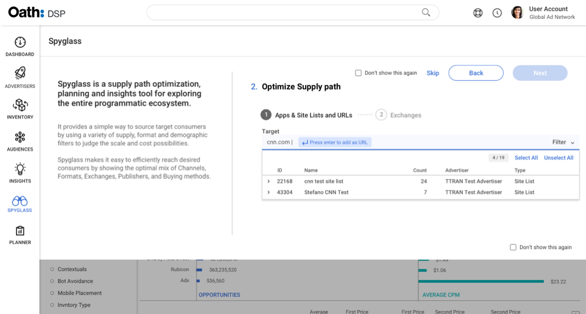
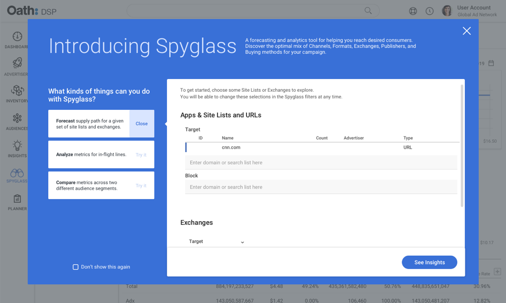
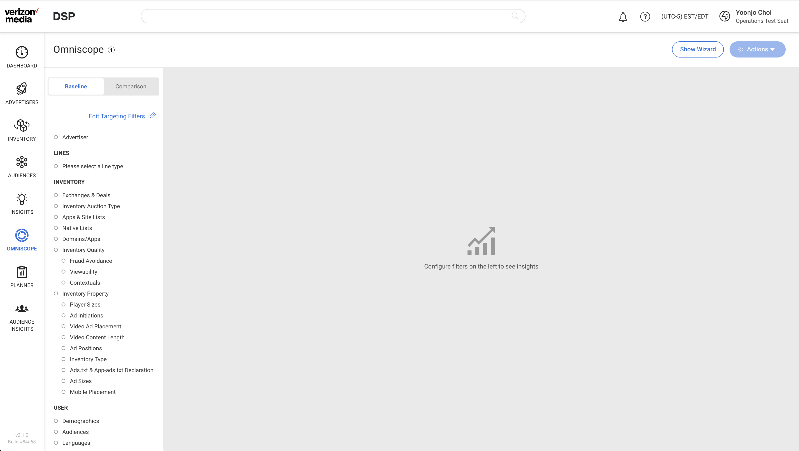
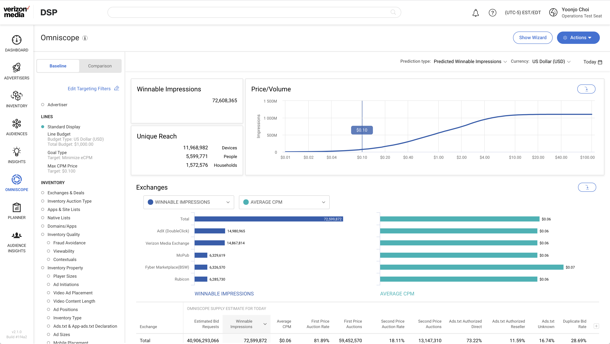
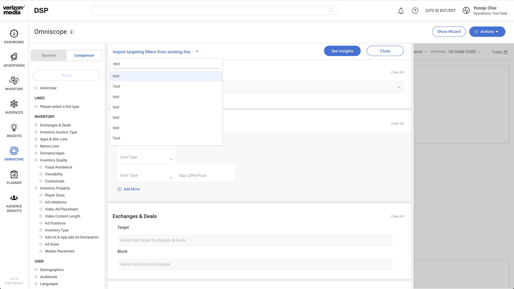
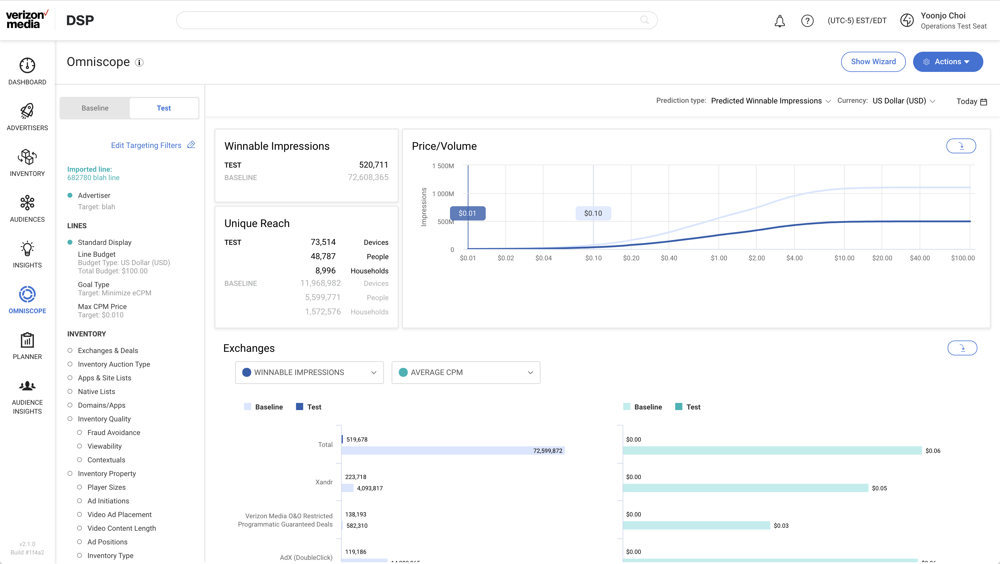

Ad Platforms Demand Side Platform
Omniscope
2018
Product Designers: Yoonjo Choi, Eugenia Lee
Tools: Sketch, Invision, Adobe XD
Background
Online Advertisers strategize to maximize the reach of their audience with the budget they have. Omniscope is an insights discovery tool for the Demand Side Platform (DSP) to empower Advertisers' Planning and Strategizing stage of the process.

My focus was on On-boarding and Targeting Filter interactions while my partner Eugenia Lee focused on the Data Visualization.
Problem Space
We needed a central place where users can access multiple data points. Previously, users were going to different areas of the DSP to grab screenshots of data points or generating CSV reports to manually create their own spreadsheets in order to analyze data.
Users

Use Case 1
"Help me see what my reach is with this targeting criteria so I can recommend the most effective targeting strategy."
Use Case 2
"Help me import an existing campaign so I can identify where I can improve and compare to propose a better strategy this quarter."
Areas of Focus & User Flow
- Discoverability
- 1. Navigation to Omniscope after log-in
- Learnability & Usability
- 2. How to configure targeting filters and display insights
- 3. How to add a comparison

Early Layout Explorations: Filters
- Filter layout options
- Baseline and Comparison UI options

User Testing & On-boarding Iterations
1

Initial Report 6/20/2018
- Lack of Context
- Users didn't understand what the term Spyglass (original name) referred to and had a hard time anticipating what they would find within this area of the site. When they arrived, they had a hard time interpreting the default data, partially a result of their lack of experience with the interface but also likely due to the fact that they have no role in selecting the filters that populated the default data.
- Unclear steps
- After arriving to the initial screen and familiarizing themselves with the default data, users weren't sure how to proceed or what to do with the interface. Even after exploring the tool, they struggled to understand when in the campaign lifecycle they might use this feature.
2. Guided Approach
- Pro
- Step by step educational guide tested positively
- Con
- Attempted name change from Spyglass to Ecosystem Insights; did not stick
- Even more confusion around lack of context due to isolated guide

3. Intro Text & Guided Approach
- Pro
- Step by step educational guide continued to test positively
- Tried a sneak peak approach with a tinted background which helped users understand what may be coming next
- Con
- Back to Spyglass and continued to work with Marketing for feature name
- Intro text introduced; lengthy blurb did not help users understand the tool effectively

4. Splash Screen
Eventually landed on a splash screen UI. Best practice use cases are displayed to educate the user but does not hinder them from going straight to the UI. The key was to keep context and not to render data user did not take part in populating.

Final Production
Use Case 1 – Solution
"Help me see what my reach is with this targeting criteria so I can recommend the most effective targeting strategy."
Default State

Result: Baseline

Use Case 2
"Help me import an existing campaign so I can identify where I can improve and compare to propose a better strategy this quarter."
Filters: Import

Result: Baseline & Comparison

Micro Interactions
Results
- Internal Daily Visitors increased by 52% YoY (Nov 2019 vs Nov 2020)
- External Daily Visitors increased by 15% YoY (Nov 2019 vs Nov 2020)
- Additional usage identified for Mid and Post flight Campaigns
- Recognized as a flagship feature and continuing to mature